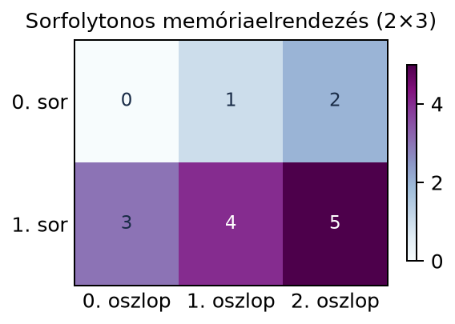

Amikor egy transformer többfejű figyelmi rétegét valósítjuk meg,
gyakran találkozunk ezzel a lépéssel: a bemeneti tenzor alakja
,
ahol
a köteg mérete,
a tokenek száma,
a modell dimenzió. Az önfigyelem (self-attention) előtt a
dimenziót
fejre kell bontani úgy, hogy minden fej
dimenzióval dolgozzon. Az eredmény olyan tenzor, amelyben a fej a
második tengelyre kerül:
.
Ezt az átalakítást csak úgy tudjuk helyesen elvégezni, ha értjük, mit
tesz a reshape és a transpose a memóriabeli
elemek sorrendjével. Ha a kettőt összekeverjük, a fejek rossz tokenekhez
rendelik az elemeket, és a modell értelmetlen eredményt ad.
Vegyünk egy -as mátrixot, amelyet a gép egyetlen lineáris memóriaterületen tárol. A NumPy alapértelmezésben sorfolytonosan tárol: azaz először az első sor összes eleme, majd a második soré jön. Az alábbi hőtérkép a memóriacímek növekedési sorrendjét mutatja: a kisebb sorszám a kisebb memóriacímet jelöli.

Ugyanez az elrendezés logikai indexekkel felírva:
| Logikai index | (0,0) | (0,1) | (0,2) | (1,0) | (1,1) | (1,2) |
|---|---|---|---|---|---|---|
| Lineáris memória index | 0 | 1 | 2 | 3 | 4 | 5 |
Ez azért fontos, mert a reshape és a
transpose ezen a lineáris sorrenden hajt végre
átértelmezést.
Definíció. Egy -dimenziós tenzor sorfolytonos (C-order) tárolása azt jelenti, hogy a memóriában az elemek úgy követik egymást, hogy a legutolsó tengely indexe változik a leggyorsabban: először az első „sor” összes eleme, majd a második, és így tovább. Az utolsó előtti tengely ezután lép eggyel, és így haladunk visszafelé az első tengelyig.
Definíció. A stride egy tenzor
adott tengelye mentén történő eggyel való elmozduláshoz tartozó
memóriacím-különbség. Ezt kétféleképpen szokás megadni:
elemben vagy bájtban. A matematikai
leírásban elemben számolunk; a NumPy ndarray.strides értéke
viszont bájtban van. A kettőt az itemsize kapcsolja össze:
Például egy
-es
C-order mátrix elem-stride-jai
,
mert a következő sor ugyanazon oszlopbeli eleme
elemnyivel odébb van, a soron belül következő elem pedig 1-gyel.
float64 esetén az itemsize
,
ezért a NumPy .strides értéke
bájt.
import numpy as np
X = np.arange(6, dtype=np.float64).reshape(2, 3)
print("itemsize:", X.itemsize)
print("strides (byte):", X.strides)
print("elem-stride:", tuple(s // X.itemsize for s in X.strides))
print("transpose strides (byte):", X.T.strides)Várt kimenet:
itemsize: 8
strides (byte): (24, 8)
elem-stride: (3, 1)
transpose strides (byte): (8, 24)Más keretrendszerek (például PyTorch, TensorFlow) stride-konvenciója
eltérhet, ezért a NumPy .strides értékét nem szabad
automatikusan azonosnak venni egy másik könyvtár stride-fogalmával.
Definíció. Egy tenzorművelet nézet
(view), ha az eredeti memóriaterületet nem másolja le, csak a
tenzor metaadatait (alak, stride) változtatja meg. Másolat
(copy) esetén új memóriaterület keletkezik, és az adatok
átmásolódnak. A NumPy-ban a reshape és a
transpose gyakran nézetet ad, de nem mindig; a
np.ascontiguousarray C-folytonos tömböt ad, és csak akkor
másol, ha a bemenet nem sorfolytonos.
A reshape alapértelmezett order='C' mellett
a tenzor elemeit C-order sorrendben olvassa, és ugyanabban a sorrendben
új alakba rendezi. Ha az eredeti
alakja
,
akkor az
elem lineáris indexe
.
A reshape során ugyanez a lineáris index az új alak
dimenziói szerint újra felbontásra kerül. Például a
-as
elemei
sorrendben vannak. Ha reshape(3,2)-re alakítjuk, akkor a
-es
tömb sorai:
Figyeljük meg: ez nem a
transzponáltja, hanem egyszerűen ugyanaz az elemsor, csak más
sorhosszúságra tördelve. A reshape alapértelmezett
order='C' mellett pusztán ezt a lineáris sorrendet őrzi
meg.
Az order='F' másik logikai sorrendet választ: az első
tengely indexe változik leggyorsabban. Ugyanazon a
-as
mátrixon a két lapítás tehát eltérő elemsort ad:
import numpy as np
X = np.arange(6).reshape(2, 3)
print("C:", X.reshape(6))
print("F:", X.reshape(6, order="F"))Várt kimenet:
C: [0 1 2 3 4 5]
F: [0 3 1 4 2 5]A flags (C_CONTIGUOUS,
F_CONTIGUOUS) a memória tárolási tulajdonságát írja le, a
strides a tengelylépéseket; az order paraméter
a művelet logikai sorrendjét választja, ami nem feltétlenül azonos a
memória aktuális elrendezésével.
A transzponálás nem az elemek sorrendjét változtatja, hanem a
tengelyek sorrendjét. Két dimenzióban
esetén az
elem a transzponált
pozíciójába kerül. A memóriában az elemek ugyanott maradnak, csak
megváltozik a stride-szerkezet. Ha
elem-stride-jai
(elemben), akkor
elem-stride-jai
lesznek, mert a transzponált sorainak megfelelő elemek az eredeti
oszlopok mentén 1 lépéssel, a transzponált oszlopainak megfelelők pedig
az eredeti sorok mentén
lépéssel érhetők el. A NumPy .strides értéke ezek
itemsize-szorosa, bájtban.
Többdimenziós esetben a transpose a tengelyek
permutációját adja meg. Például ha
alakja
,
akkor Y.transpose(0, 2, 1, 3) az első tengelyt helyben
hagyja, a másodikat és a harmadikat felcseréli, a negyediket helyben
hagyja, így az eredmény alakja
.
A transzponált tenzor általában nem lesz sorfolytonos, mert a stride-jai nem felelnek meg annak a szabálynak, hogy az utolsó tengely stride-ja 1 legyen, és a korábbiak sorban egyre nagyobbak. Ilyenkor a tenzor nézet, de nem folytonos (non-contiguous).
ascontiguousarrayAmikor egy nem folytonos tenzorra reshape-et
alkalmazunk, a NumPy csak akkor készít másolatot, ha az új alakhoz nem
található az eredeti stride-okkal konzisztens leképezés. Néhány nem
folytonos elrendezés — például egy rendszeres oszloplépésű szelet —
nézetként átformázható; más esetekben, például egy transzponált mátrix
bizonyos átalakításainál, másolat készül. A következő példa mindkét
esetet megmutatja:
import numpy as np
A = np.arange(12).reshape(3, 4)
S = A[:, ::2] # (3,2), nem folytonos
print("S folytonos?", S.flags["C_CONTIGUOUS"])
print("S -> (2,3) nezet?", np.shares_memory(S, S.reshape(2, 3)))
X = np.arange(6).reshape(2, 3)
Y = X.T # (3,2), nem folytonos
print("Y -> (2,3) nezet?", np.shares_memory(Y, Y.reshape(2, 3)))Várt kimenet:
S folytonos? False
S -> (2,3) nezet? True
Y -> (2,3) nezet? FalseA np.shares_memory azt mutatja, hogy az
S.reshape(2,3) ugyanazt a memóriát használja, míg a
transzponált Y.reshape(2,3) új memóriát kap. A
reshape tehát nem „mindig másol”, hanem szükség esetén
másol.
A np.ascontiguousarray garantáltan C-order folytonos
tömböt ad: ha a bemenet már C-folytonos, ugyanazt az objektumot adhatja
vissza, ha viszont nem folytonos, másolatot készít. Ezt gyakran akkor
használjuk, amikor egy alacsony szintű könyvtár (például egy BLAS-hívás)
sorfolytonos bemenetet vár. Ha a cél független, módosítható másolat,
használjunk .copy()-t, ne az
ascontiguousarray-t. A memóriamegosztás ellenőrizhető:
import numpy as np
A = np.arange(6).reshape(2, 3)
B = np.ascontiguousarray(A)
print("azonos objektum?", A is B, "| közös memória?", np.shares_memory(A, B))
S = A[:, ::2] # nem C-folytonos nézet
C = np.ascontiguousarray(S)
print("S és C közös memória?", np.shares_memory(S, C))
D = S.copy()
print("S és D közös memória?", np.shares_memory(S, D))Várt kimenet:
azonos objektum? True | közös memória? True
S és C közös memória? False
S és D közös memória? FalseVegyük a mátrixot, amelyet C-orderben a elemsorozatként tárolunk. Az elem-stride-jai: .
A transzponált:
A transzponált elem-stride-jai: . Ez nem folytonos, mert az utolsó tengely stride-ja nem 1.
Most alkalmazzunk reshape-et a transzponáltra a
célalakkal. A NumPy a C-order sorrendben olvassa a transzponált elemeit:
.
Ezt a sorozatot rendezi újra
-as
mátrixba:
Ez az eredmény nem az eredeti
.
Ha az lett volna a célunk, hogy transzponálással és reshape-pel
visszakapjuk az eredeti mátrixot, akkor rossz utat választottunk. A
helyes visszaállítás a transzponálás visszacsinálása (2D-ben még egy
transzponálás, X.T.T; több tengelynél a fordított
permutáció). Az np.ascontiguousarray ezen nem segít: a
reshape mindig a logikai C-order sorrendet követi,
függetlenül attól, hogyan helyezkednek el az elemek a memóriában, ezért
np.ascontiguousarray(X.T).reshape(2, 3) ugyanezt a hibás
mátrixot adja.
Ugyanez a jelenség magasabb dimenzióban is fennáll: ha egy nem
folytonos tenzorra reshape-et alkalmazunk, a művelet
szükség esetén másolatot készít, és a logikai elemsorrendet az
alapértelmezett C-order szerint rendezi, ami gyakran nem az intuitív
várakozás.
A többfejű figyelem egyik leggyakoribb előkészítő lépése a
modell dimenzió fejekre osztása. A bemeneti
alakja
,
ahol
.
Az első lépésben a reshape az utolsó dimenziót két részre
bontja:
Ez azért helyes, mert a C-order elrendezésben az utolsó dimenzió elemei egymás után vannak, így a hosszú vektor elejétől a darab elemet az első fejhez, a következő darabot a másodikhoz rendelhetjük, és így tovább.
Ezután a tengelyeket úgy permutáljuk, hogy a fej dimenzió a második helyre kerüljön:
ahol az argumentum a cél tengelysorrend:
-adik
(B) marad, a
-es
(h) jön előre, az
-es
(T) és a
-as
()
követi. Az eredmény alakja
.
Ez a transzponálás nézet, tehát nem másol adatot, de a tenzor stride-jai
megváltoznak. Minden fej számára a tokenenkénti
dimenziós vektorok a memóriában nem összefüggő blokkok, de ez nem gond,
mert a későbbi mátrixszorzások (batched matmul) képesek nem
folytonos bemenetekkel is dolgozni.
Fontos, hogy a sorrend nem felcserélhető: ha a
reshape-et közvetlenül
alakra próbálnánk használni (transzponálás nélkül), az az elemek
sorrendjét C-order szerint rendezné, és az első fej nem az eredeti
dimenzió első
elemét kapná minden tokenből, hanem a C-order sorrend első
elemét, vagyis (ha
osztja
-t)
az első
token teljes,
hosszú vektorát. A fenti kis példában
(,
)
az első „fej” egyszerűen az első token teljes vektora lenne. Ezért a
tipikus megoldás: először szétválasztás a meglévő utolsó tengely mentén
(reshape), majd tengelycsere (transpose).
A reshape és a transpose viselkedése a
memória-címzésből következik. Egy
-dimenziós
tömbnél az elem lineáris címe:
ahol
a
-adik
tengely stride-ja. A reshape annyit tesz, hogy az új
alakhoz új stride-okat keres. Ha létezik olyan stride-készlet, amellyel
az új alak minden eleme ugyanarra a memóriacímre mutat, ahová a C-order
olvasás szerint mutatnia kell, a művelet nézet. Ha ilyen stride-készlet
nincs, másolat szükséges.
A transpose esetén a stride-ok permutálódnak, ami mindig
nézet, mert az elemekhez tartozó memóriacímek ugyanazok maradnak. A nem
folytonosság abból ered, hogy a stride-ok már nem a C-order szerinti
rendben állnak (az utolsó tengelyé 1, előre haladva egyre
nagyobbak).
Az alábbi kód reprodukálja a kézi példát, és bemutatja a stride-ok és a nézet/másolat viselkedést. A kimeneti értékek nem futtatott kód eredményei, hanem kézzel ellenőrzött várt értékek.
import numpy as np
# 2x3-as mátrix sorfolytonos tárolással
X = np.arange(6).reshape(2, 3)
print(X)
# [[0 1 2]
# [3 4 5]]
print("Eredeti stride:", X.strides) # (24, 8) bájtban int64 esetén
print("Contiguous?", X.flags['C_CONTIGUOUS']) # True
# Transzponálás nézet
Y = X.T
print(Y)
# [[0 3]
# [1 4]
# [2 5]]
print("Transzponált stride:", Y.strides) # (8, 24)
print("Contiguous?", Y.flags['C_CONTIGUOUS']) # False
# Reshape a transzponálton: másolat jön létre
Z = np.reshape(Y, (2, 3))
print(Z)
# [[0 3 1]
# [4 2 5]] # NEM az eredeti X!
# Folytonos másolat készítése
C = np.ascontiguousarray(Y)
print("Ascontiguous stride:", C.strides) # (16, 8)
print(C)
# [[0 3]
# [1 4]
# [2 5]]A bájttal kifejezett stride-oknál 64 bites egész esetén 8 bájt az elemméret. Az elemszámos definíció szerint az eredeti stride , a transzponált , a folytonos másolat .
A fejekre bontás NumPy-ban:
B, T, d, h = 1, 2, 4, 2
d_h = d // h
X = np.arange(B * T * d).reshape(B, T, d)
print("X[0,0,:] =", X[0,0,:]) # [0 1 2 3]
Y = X.reshape(B, T, h, d_h) # (1,2,2,2)
print("Y[0,0] =\n", Y[0,0,:,:])
# [[0 1]
# [2 3]]
Z = Y.transpose(0, 2, 1, 3) # (1,2,2,2) -> h dimenzió a 2. helyre
print("Z shape:", Z.shape) # (1, 2, 2, 2)
print("Z[0,0,:,:] (1. fej) =\n", Z[0,0,:,:])
# [[0 1]
# [4 5]]
print("Z[0,1,:,:] (2. fej) =\n", Z[0,1,:,:])
# [[2 3]
# [6 7]]A kimenetből látható, hogy az első fej minden tokenből az eredeti dimenzió első elemét kapta, a második fej pedig a következő elemet.
A transformer-architektúrákban (például a GPT- vagy BERT-alapú
modellekben) a figyelmi fejekre bontás pontosan a fenti lépéseket
használja. A bemeneti tenzor
alakja
.
A lineáris vetítések után keletkező
tenzorok mind ugyanilyen alakúak. Mindhármat először
alakra reshape-eljük, majd
transpose(0, 2, 1, 3) segítségével
alakra hozzuk. Ezután a figyelmi pontszámok batch-elt mátrixszorzással
számíthatók:
ahol az index a dimenziók felett fut, pedig a nyers figyelmi pontszámok mátrixa. Ezekből softmaxszal kapjuk a figyelmi súlyokat, majd a súlyozott értékösszeget:
Itt a softmax soronként, a kulcsok dimenziója mentén normalizál,
ezért a
minden sorának összege 1. A
a maszk mátrixa (maszk nélkül
);
a tiltott pozíciókhoz tartozó pontszámot
-hez
közeli értékre állítja, így a softmax után ott nulla súly lesz. Végül a
fejeket ismét összefűzzük. A PyTorch nn.MultiheadAttention
implementációjában hasonló lépések szerepelnek, de a konkrét
tengelysorrend a keretrendszer verziójától függhet; ezért fejlesztés
előtt mindig ellenőrizni kell a dokumentációt.
Reshape transzponálás helyett a fejekre
bontásnál. Ha valaki a
tenzort közvetlenül reshape(B, h, T, d_h) alakra próbálja
hozni, akkor az eredmény az elemek C-order sorrendjét tartja meg, és nem
a kívánt fej-felosztást adja. Ehelyett először
reshape(B, T, h, d_h), majd
transpose(0, 2, 1, 3) a helyes. A hibás lépés olyan fejeket
eredményez, amelyek nem az eredeti modell dimenzió megfelelő
szegmenseiből dolgoznak, és a modell teljesítménye drasztikusan
romlik.
Azt gondolni, hogy a reshape mindig nézet,
vagy mindig másol. A reshape akkor nem másol, ha a
kért átalakítás az eredeti stride-okkal megvalósítható. Nem folytonos
tenzornál ez néha lehetséges (rendszeres oszloplépésű szeletnél), máskor
nem (például egy transzponált mátrix adott átalakításánál); ilyenkor a
függvény másolatot készíthet, és az eredmény nem feltétlenül azt az
elrendezést adja, mint amit a felhasználó „transzponálás után, majd
vissza-alakítás” logikával elképzel. Különösen 3D-nél gyakori, hogy egy
transzponált tenzorra reshape-et alkalmazva a modell súlyai
rossz sorrendbe kerülnek.
A nem folytonos tenzorok kezelésének hiánya alacsony
szintű kódban. Egyes BLAS-rutinok sorfolytonos bemenetet
várnak. Ha nem folytonos, transzponált nézetet adunk át, a program hibát
dobhat, vagy rossz eredményt ad. Ezt a np.ascontiguousarray
használatával előzhetjük meg.
Miben különbözik a reshape és a transpose a
memóriában? Melyik őrzi meg mindig az elemek lineáris sorrendjét, és
melyik csak a stride-okat változtatja?
Adott a
mátrix. Írd le a memóriabeli elemsorrendjét, határozd meg az elem-szintű
stride-jait, majd számítsd ki a transzponált stride-jait. Mi a
transzponált reshape(2,3) eredménye? (Az elemek legyenek a
fenti sorrendben.)
Írj NumPy-kódot, amely egy
alakú, azaz
tenzort
(,
,
)
fejre bont
():
először reshape-pel
alakra hozza, majd úgy transzponálja, hogy a fejek tengelye a második
helyre kerüljön:
.
Írd ki az első köteg első tokenjét, és ellenőrizd, hogy a két fej az
eredeti 6 dimenzió első, illetve második 3 elemes szeletét kapja.
Miért kell a figyelmi rétegben a transpose-ot a
reshape után végezni, és miért nem lehet a kettőt
felcserélni? Adj egy olyan esetet, amikor egy nem folytonos tenzor
reshape-je másolatot ad, és magyarázd el, miért.
A reshape alapértelmezett order='C' mellett
megőrzi az elemek C-order lineáris sorrendjét, és csak a shape-en
változtat; order='F' esetén a másik (oszlopfolytonos)
logikai sorrendet használja. A transpose nem változtatja az
elemek memóriabeli sorrendjét, hanem a tengelyek permutációjával új
stride-okat ad. A reshape nézet, ha a stride-ok
konzisztensek, különben másolat; a transpose mindig
nézet.
Az
elemei C-orderben:
.
Eredeti stride:
(mert a sor 3 elemmel később jön, az oszlop 1). A transzponált
stride-jai:
.
A transzponált reshape(2,3) a C-orderben olvasott elemeket
()
rendezi újra:
Ez nem az eredeti .
import numpy as np
B, T, d, h = 2, 3, 6, 2
d_h = d // h
X = np.arange(B * T * d).reshape(B, T, d)
Y = X.reshape(B, T, h, d_h) # (2, 3, 2, 3)
Z = Y.transpose(0, 2, 1, 3) # (2, 2, 3, 3): fej a 2. pozíción
print(X[0, 0, :])
print(Y[0, 0, :, :])
print(Z.shape)
print(Z[0, 0, 0, :]) # 1. fej, 1. token
print(Z[0, 1, 0, :]) # 2. fej, 1. tokenVárt kimenet:
[0 1 2 3 4 5]
[[0 1 2]
[3 4 5]]
(2, 2, 3, 3)
[0 1 2]
[3 4 5]A reshape az elemek lineáris sorrendjét tekinti, a
transpose pedig a tengelyek metaadatait. A
reshape csak akkor bont helyesen fejekre, ha egyetlen,
összetartozó tengelyt (itt a
tengelyt) bont fel. Ha a
tenzorból először a
célalakot akarnánk kialakítani egyetlen reshape-pel, és
csak utána (vagy egyáltalán nem) transzponálnánk, a reshape
a
és
tengely elemeit együtt, C-order szerint osztaná szét: az első „fej” az
első
token teljes vektorát kapná. Ezért előbb a
tengelyt bontjuk
-ra,
és csak utána hozzuk előre a
tengelyt. A nem folytonos tenzor reshape-je (például a
-as
mátrix transzponáltjáé
alakra) másolatot ad, mert nincs olyan stride-készlet, amellyel az új
alak a C-order szerinti elemsorrendet a régi memóriából olvasná, így a
gép kénytelen az elemeket egyenként átmásolni.
A reshape és a transpose a tenzorok
memóriaelrendezését eltérően kezeli. A sorfolytonos (C-order) tárolásban
az utolsó tengely indexe változik leggyorsabban; a stride-ok ehhez
igazodnak. A reshape megőrzi a lineáris elemsorrendet és új
shape-et ad, de nem folytonos bemenet esetén másolatot készíthet. A
transpose a tengelyek permutációjával és a stride-ok
cseréjével jár, és mindig nézet, viszont a tenzor nem folytonossá
válhat. A többfejű figyelemnél a helyes sorrend: először
reshape az utolsó dimenzió fejekre bontásához, majd
transpose a fej dimenzió második helyre hozásához. A nézet
és a másolat, valamint a contiguity ismerete elengedhetetlen a hatékony
és helyes neurális háló implementációhoz.
Három fontos definíció:
.strides
bájtban értendő.